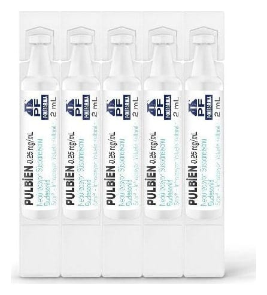

Pulbien 0.25 mg/ml Nebülizasyon Süspansiyonu, 20 Adet

Ne için kullanılır
KT · Bölüm 1 PULBİEN glukokortikosteroid olarak adlandırılan budesonid etkin maddesini içeren ve iltihaplanmayı azaltmak için kullanılan ilaçlar grubuna dahildir. Astımınız solunum yollarınızdaki iltihaplanmadan kaynaklanmaktadır. PULBİEN astımın tüm basamaklarında iltihabı gidermek, solunum yolunu genişletmek, hastalık belirtilerini kontrol altına almak ve ağız yoluyla kullanılan steroid (astım tedavisinde de kullanılan, hayat kurtarıcı ilaçlar) ihtiyacını azaltmak amacıyla kullanılır. Kronik tıkayıcı akciğer hastalığında (KOAH) tek başına kullanılması önerilmez. PULBİEN aynı zamanda bebek ve çocuklarda hızlı şekilde ortaya çıkan, hastanede yatış gerektiren, virüslerin neden olduğu bir üst solunum yolu enfeksiyonu olan krup hastalığını tedavi etmek için kullanılır. PULBİEN 20 adet flakon içeren ambalajlarda kullanıma sunulmaktadır. Her flakon 2 mL, beyaz opak renkte süspansiyon içermektedir. Her bir flakon tek kullanım içindir. PULBİEN nebülizatör (inhalasyon cihazı) yardımıyla solunmak içindir. Ağız parçası veya yüz maskesi yardımıyla nefes aldığınızda, ilaç nefesinizle birlikte akciğerlerinize kadar ulaşacaktır.
Düzenli olarak doktor tarafından reçete edildiği şekilde kullanılmalıdır. Ancak, PULBİEN başlamış akut astım atağınızı rahatlatmaz.